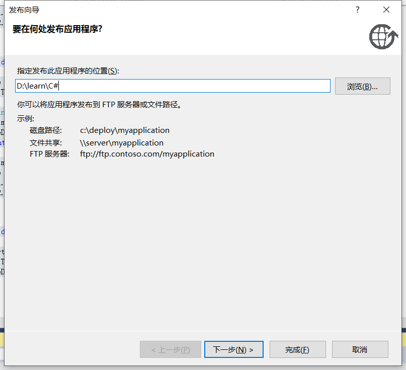

之前同事发给我一个软件，是 C# 写的，非常的小巧，比 electron 小太多了。最近突发奇想想要自己尝试写一个小软件。
需求如下：
三个按钮，第一个按钮叫记录，第二个按钮叫暂停，点击记录按钮记录当前时间，显示在页面上，点击暂停按钮记录当前时间显示在页面上，并计算两个时间的时间差，以时-分的格式显示在软件上。 继续点击记录和暂停按钮，继续计算时间差，并和上一次记录的时间差进行一个累加同样显示在页面上。 最后一个按钮命名清空，可以清空页面上所有文本信息。
开发环境：Visual Studio 2015
步骤 1 - 创建 Windows 窗体应用程序
首先，我们需要创建一个新的 Windows 窗体应用程序。打开 Visual Studio，并在菜单中选择 “文件” -> “新建” -> “项目”。在 “新建项目” 对话框中，选择 “Windows 窗体应用程序” 并为其命名（例如：TimeRecorder）。然后，点击 “确定” 按钮创建新项目。这个时候 Visual Studio 会自动为我们创建一个空的窗体应用程序。
步骤 2 - 添加 UI 控件
接下来，我们需要向窗体中添加三个按钮(Button)和一些文本框(Label)用于显示时间记录信息。在 Visual Studio 的工具箱中，找到按钮控件并拖动三个按钮到窗体上。另外，也从工具箱中拖动三个文本框控件到窗体上，一个用于显示开始时间，另一个用于显示结束时间，还有一个显示时间差。
步骤 3 - 编写事件处理程序
当用户单击任何一个按钮时，需要调用一个事件处理程序来执行相应的操作。双击按钮，Visual Studio 将自动在源代码文件中创建事件处理程序。
首先，在窗体类中添加成员变量来保存开始和结束时间：
1 | public partial class Form1 : Form |
接下来，定义每个按钮的单击事件处理程序。记录按钮单击事件将保存当前时间并在开始时间文本框中显示它：
1 |
|
暂停按钮单击事件将保存当前时间并在结束时间文本框中显示它。然后计算时间差，并在时间差文本框中显示它：
1 |
|
最后一个按钮是清空按钮，它将清空所有文本框：
1 |
|
步骤 4 - 绑定按钮
在程序中，文本框我们使用了 txtStart，’txtEnd’，’txtTimeDiff’ 三个，我们需要做下绑定。
单机一下设计图的 label，在右边找到 Name 属性，分别依次改成上面三个值。
步骤 5 - 运行程序
现在，我们已经完成了这个简单的应用程序的开发。按 F5 键运行应用程序，然后单击记录按钮来记录时间。单击暂停按钮来结束计时并显示时间差。可以一次又一次地按下记录和暂停按钮以记录更多时间段。最后，单击清空按钮清空所有文本框。
完整代码
以下是完整的 C# 代码，可以复制并粘贴到 Form1.cs 文件中：
1 |
|
注意：上述代码中的按钮单击事件处理程序是自动生成的，需要将它们与相应的按钮相关联。可以在 Visual Studio 的属性窗口中为每个按钮选择相应的事件处理程序。
可以在下图箭头所指的 click 右边可以修改按钮的事件名，将其关联起来。
如果是使用 Visual Studio 开发 Windows 窗体应用程序，可以在设计模式下双击按钮或者单击按钮然后在属性窗口中选择单击事件，在下拉菜单中选择对应的事件处理方法即可。
具体步骤如下：
- 在 Visual Studio 中打开相应的窗体设计器。
- 选择要添加事件处理程序的按钮。
- 在属性窗口中查找事件属性（通常以“Events”为后缀）。
- 单击事件属性旁边的下拉箭头，选择相应的事件处理程序。
- 双击所选的事件处理程序名称，Visual Studio 将自动生成该事件的处理方法（这通常是一个空方法）。
- 在生成的方法中编写处理逻辑。
注意：如果使用 C# 手动编写代码而不是通过设计器来添加事件处理程序，也可以在程序的入口点手动绑定按钮事件和处理程序。例如，在 Form1 类的构造函数中添加以下代码来绑定按钮单击事件：
1 | public Form1() |
打包程序
使用 Visual Studio 的发布功能。具体步骤:
- 在解决方案资源管理器中右键你的项目,选择 “发布”。
- 在发布向导中选择 “文件夹” 作为发布目标。这会直接发布成文件夹。
- 选中或取消选中需要发布的文件。一般保留默认选择即可。
- 点击发布按钮,选择发布位置。发布过程完成后,会在指定位置生成项目文件夹。
- 将此项目文件夹压缩为 zip 文件。用户只需下载解压此 zip 文件,直接运行项目文件夹内的 exe 文件即可运行程序。
- 如果需要,也可以在发布后进一步使用 ILMerger、Costura 等工具将程序文件合并成单个 exe,以简化部署。
- 还可以通过修改项目属性,更改输出类型为“Windows 应用程序”或“控制台应用程序”等，从而生成独立的 exe 可执行文件。 使用 Visual Studio 的一键发布功能,可以非常便捷地将 C# 项目打包为展示版本或发布版本。生成的文件夹或压缩包中包含项目运行所需的所有文件，用户只需要一键运行即可。 这种简单的发布方式适用于许多基本的应用程序,如果需要更专业的安装程序，可以使用 Installer 或 ClickOnce 等方式。

使用 Visual Studio 发布功能生成的程序文件夹或者压缩包并非标准的安装程序，所以无法自动在桌面或开始菜单中生成快捷方式。 如果需要生成带有自动快捷方式和菜单项的标准安装程序，可以使用其它方法打包程序，方法如下:
- Installer 项目 - 可以生成 MSI 安装包,双击后可以自动安装程序，在桌面、开始菜单生成快捷方式和菜单项。适用于较复杂的应用程序安装,需要安装多个文件和注册表entries等。
- ClickOnce 部署 - 可以生成基于浏览器的安装程序,点击后自动安装应用程序,并在桌面生成快捷方式。适用于较简单的应用程序,无需管理员权限安装。
- Inno Setup - 这是一个开源软件,可以生成 exe 安装程序。安装后在桌面和开始菜单生成快捷方式。操作较简单，但功能也较简单,不支持复杂的安装步骤。
- Advanced Installer - 这是一个付费软件，可以生成 MSI 或 exe 安装程序。功能强大,可以实现复杂的安装步骤和界面，安装后自动创建快捷方式和菜单。
修改图标
要为应用程序修改图标,可以通过以下几种方法:
- 修改项目属性中的应用程序图标: 在解决方案资源管理器中右键你的项目,选择“属性”。在弹出的属性页中,选中“应用程序”选项卡。在“图标”下，点击“更改图标”按钮，选择新的图标文件并确定即可。 这会更改 exe 文件和安装程序的默认图标。
- 软件左上角的小图标,称为任务栏图标或通知区图标。要修改这个图标，可以: 将新图标文件添加到 Visual Studio 解决方案资源管理器中的 “图标” 或 “图像”文件夹。然后:
- 双击新图标,选择“资源嵌入”选项。这会将图标嵌入到项目资源中。
- 打开主窗体(Form1)，在属性窗口点击“图标”属性旁的省略号按钮 (…)。
- 在“选择资源”对话框中，选择刚才嵌入的图标资源,确定。 这会更改主窗体和生成的 exe 的图标。